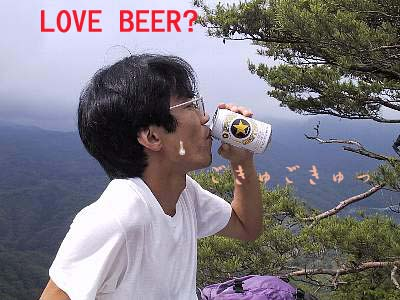

昇仙峡ハイク | ２００１年６月１７日 |
 | 今回ちょっと重いページになってるかもしれません。写真が大きいからね。勘弁してチョーだい。 梅雨の中休みをねらって、山梨県昇仙峡にハイキング！ メンバーはキッカー、らく（加藤）さん、アル兄こと山内氏、そして私べっしー。東京から応援に駆けつけた鈴木夫妻（子連れ）。 当初はキッカー達は、クライミングに行きたかったようだが前日雨が降って断念。それでも未練がましく（いや、本能だろう）道ばたの岩にしがみつきながらの行程でした。 天候は曇り。途中の県営の駐車場に車を止め、左写真の様な遊歩道を上流のロープウェイ乗り場まで順調に進む。いかにもキッカーが好きそうなデカイ岩がごろごろとしていて、景観は抜群！晴れいればいい写真が撮れるのに。と、心の中で思いながら歩を進めます。 |
| さて、ここからが難関。ロープウェイ乗り場まで来たものの、ここからロープウェイ上までいけるルートが見つからない。ちゃんと登山用のマップまで持っていたのに、入り口がわからない。おみやげやの店員などに聞いてもわからず、うろうろして、それらしい道に突入！ そこは、素人目には（私も見えなかった）獣道でさえない様な草むらを、キッカーと、らくさんが「これが道だよ」と草をかき分け進み始める。急激に山肌を登り始め、私としては「マジであっているのか」と思っていたが、キッカーとらくさんは「立派な道じゃん」とガンガン進む。 じきに、「下の方が道かな？探ってみるか？」などと、あっさりルートを変更。 |  |
 | 結局その下のルートが正解だったのだが、そこも入り口は解りづらく普段人が入っていない事が伺える。上の写真がそのルート。これよりもうチョイ進むと、それらしき道になる。 ルート図では１時間２０分みたいな事が書いてあったが、１時間かからず上のロープウェイ乗り場に到着。 そこが羅漢寺山（１,０５８ｍ）、山梨百名山の一つ。（私はココで百名山って日本百名山以外にもあることを知る）。下のロープウェイ乗り場から標高差３００ｍ以上はある。 上のロープウェイ乗り場からさらに２０分くらい進むと、弥三郎岳というデカイ岩の上に行ける。左の写真がそこで、アル兄が歩いているところです（下が岩）。見晴らしはよく、遠く甲府の街も望めます。柵もないので端を歩くのはやめましょう！ |
| 汗をかいた後は当然・・・・・さすがアル兄！ → （ココでアル兄の意味を知らない人へ。 アル兄とはアルコール兄弟の兄貴と言うことです。当然弟もいます。もちろん実際の兄弟ではありません。いつぞやのキャンプでみんなが寝た後、２人で日本酒一升瓶を一晩であけたことから付いたあだ名） 下りはスイス製の全デジタル制御と書かれた、手動で扉を開閉するロープウェイに乗って、５分で下に到着。（デジタル制御ってなんだ？） 帰り温泉に入り、飯を食って、５２号線近くの下部町のホタルの里に寄る。着いた時間がちょっと遅くあまり光ってなかったが、確かにホタルが光ってました。いや〜〜久しぶりにホタル見たな〜〜 |  |